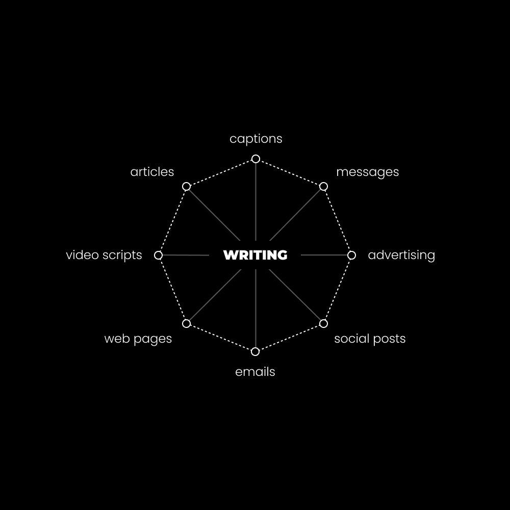
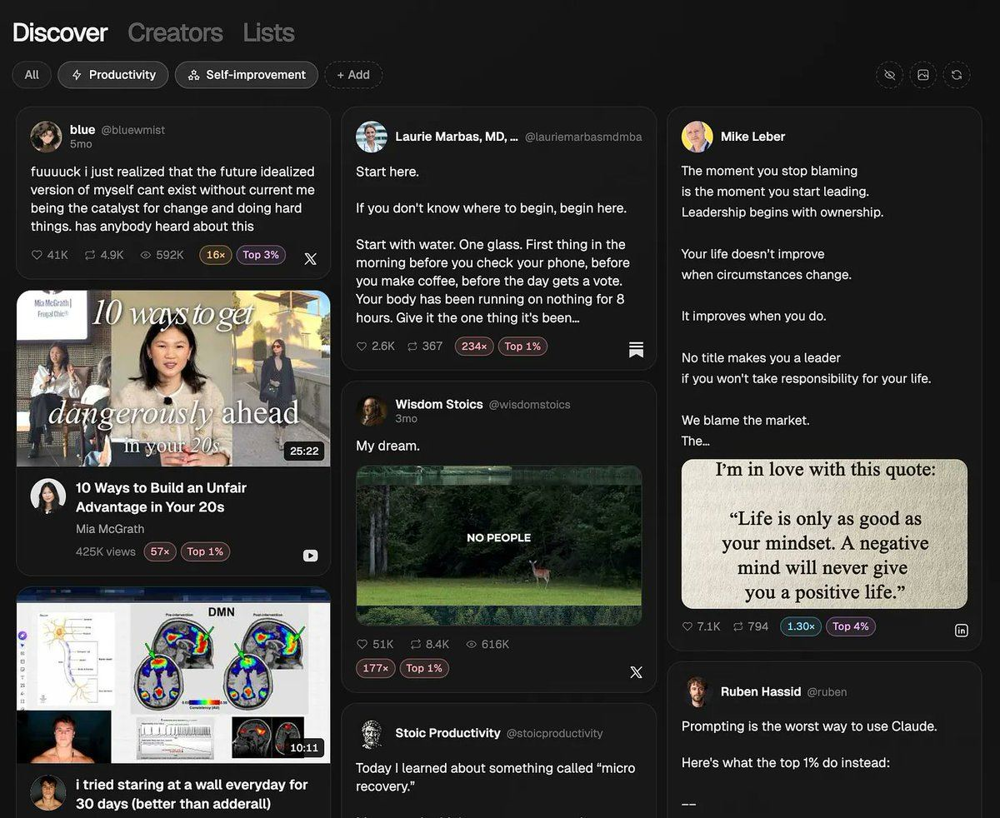
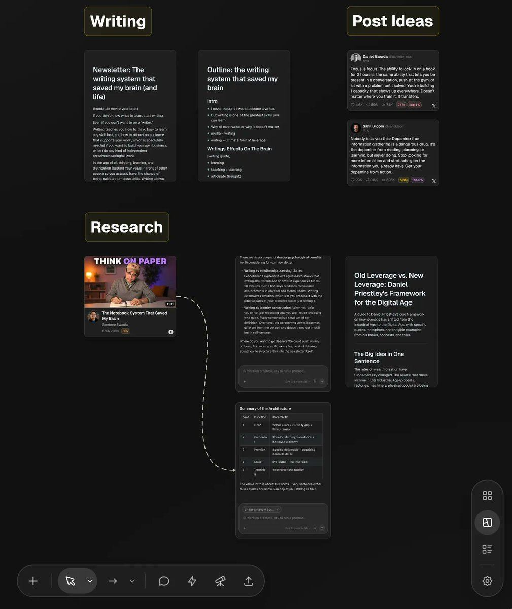

原题：The writing habit that saved my brain (and my future)
作者：Dan Koe（@thedankoe） | 发布：2026-07-16（北京时间；原始时间戳为 2026-07-15 21:58 UTC） | 原文：https://x.com/thedankoe/status/2077513202527773093
译注：【配图】为原文配图位置。文中作者称本文标题为"The writing system that saved my brain"，与实际标题（writing habit）不一致，原文如此。文中有 Eden 与训练营推广，照译保留。
Writing teaches you how to think, how to learn any skill fast, and how to attract an audience that supports your work, which is absolutely needed if you want to build your own business, or just do any kind of independent creative/meaningful work.
在 AI 时代，思考、学习和分发（把你的价值摆到别人面前，让你真正有机会获得报酬）是永恒的技能。写作让你在练习所有这些技能的同时，顺带建立数字杠杆。
In the age of AI, thinking, learning, and distribution (getting your value in front of other people so you actually have the chance of being paid) are timeless skills. Writing allows you to practice them all while building digital leverage as a byproduct.
我从没想过自己会成为一个写作者。
I never thought I would be a writer.
我看起来都不像。我是一个又大又笨的肌肉男，爱上了深刻的观念。
I don’t even look the part. I’m a big dumb meathead who fell in love with deep ideas.
By all measures, writing, as a simple morning habit, has completely changed the course of my mind and life. It has helped me articulate my thoughts, calm my mind, find opportunities outside of the traditional job market, and is the single thing that fuels the success of my work and business.
In this letter, I want to show you my system for capturing ideas and writing content worth reading, but I also want to show you why this path is more viable than ever - and why it will transform how your brain interacts with reality.
是的，就是这么深刻。
Yes, it’s that deep.
我们开始吧。
Let’s begin.
旧杠杆 VS 新杠杆：现代成功的秘密
Old leverage VS new leverage: The secret to modern success
The biggest leverage is no longer capital. The biggest leverage is enterprise — the ability to run a great business. And in particular, the biggest leverage is personal brand. Having a big audience. As soon as you’ve got people paying attention to you, you have this enormous form of leverage.
– Daniel Priestley
财富创造的规则已经从根本上改变了。
The rules of wealth creation have fundamentally changed.
The assets that drove income in the Industrial Age (property, factories, machinery, physical goods) are being replaced by digital assets (audience, personal brand, IP, content, data, software) that are incredibly cheap to build, more scalable, harder to tax, and compound while you sleep.
在当今世界为自己建立杠杆，唯一的要求就是一个好点子，以及把它发到互联网上的信心。
The only requirement to building leverage for yourself in today’s world is a good idea and the confidence to post it on the internet.
The problem, and opportunity, is that most people are still conditioned by Industrial values. They somehow still believe that school → job → retire is the most certain, safe, and secure when that couldn’t be any further from the truth.
在为你的未来建立杠杆、从而创造财富这件事上，同样如此。
The same holds true when it comes to building leverage, and thus creating wealth, for your future.
旧杠杆来自实物的、有形的资产。
Old leverage comes from physical, tangible assets.
A house, factory, Rolex, fleet of trucks, warehouse of inventory, gold. You buy them, then let them appreciate or generate income.
旧杠杆是线性的、本地的。
Old leverage is linear and local.
一座工厂每天只能生产那么多件产品，一栋房子一次只能租给一个租户。
A factory can only produce so many units per day, and a house can only be rented to one tenant at a time.
别误会，杠杆就是杠杆，旧杠杆仍然是好东西。
Don’t get me wrong, leverage is leverage, and old leverage is still a great thing.
然而，如果工资崩溃，实物资产将是政府首先找到、征税和没收的东西——而这在今天比昨天更有可能发生，因为 AI 可以迅速做到这一点（译注：原文"because AI can swiftly do that"指代不明，大意应为 AI 可能迅速导致工资崩溃），从而导致政府扩大社会安全网。
However, physical assets are going to be the first thing that governments find, tax, and seize if wages collapse, which is more likely today than yesterday because AI can swiftly do that, leading to governments expanding social safety nets.
政府没收一份认识你的人的邮件列表、一个内容库或一本畅销书的可能性要小得多。
Governments are much less likely to seize an email list of people who know who you are, a library of content, or a best-selling book.
新杠杆来自无形的、数字的资产。
New leverage comes from intangible, digital assets.
An audience, personal brand, IP, data, systems, software. These are the leverage of the newly rich. Media, data, and code. Content can be written once and be seen by millions of people. Software can be created once and serve millions of users.
For most people, writing is the most accessible and practical form of leverage. You can learn to code, but if you cannot attract people to care about the product you built, then nobody will use or pay for it. Writing is the leverage that unlocks other forms of leverage.

【配图】
你不会在资产负债表上看到数字资产，但它们占标普 500 价值的 90%。
You will not see digital assets on a balance sheet, but they represent 90% of the S&P 500’s value.
金·卡戴珊、泰勒·斯威夫特、瑞安·雷诺兹、野兽先生、埃隆·马斯克——都拥有庞大的受众和个人品牌。
Kim Kardashian, Taylor Swift, Ryan Reynolds, Mr. Beast, Elon Musk - all have massive audiences and personal brands.
But you probably don’t want anywhere near their level of fame, and that’s a great thing, because you don’t need millions of followers to make this work. With 6-12 months of focused effort, you can find yourself in a wildly different life than you are now.
Personally, I replaced my income around 5,000 followers (about 6 months in) because I actually took it seriously. My friend Randy, a fitness coach, was making $100k a month at around 10,000 followers, because he invested in education, studied marketing and sales, and implemented everything as if his life depended on it.
关键在于，人们严重高估了自己需要多少才能赢，因为他们在时间线上看到的全是脱离现实的名人。
The point is that people drastically overestimate how much they need to win, because all they see is out-of-touch celebrities on their timeline.
That’s why we teach how to find what you want to talk about, create your ‘personal monopoly,’ and write high-impact content in our bootcamp. You still have time to join the next live call we’re doing.
但写作的好处远不止于此。
But the benefits of writing stem far beyond that.
写作如何彻底改变你的大脑和人生
How writing completely shifts your brain & life
在我看到自己说了什么之前，我怎么知道自己在想什么？
——E.M. 福斯特
How do I know what I think until I see what I say?
– E.M. Forster
这很难解释……但写作这个行为，远比提笔落纸深刻。
It’s hard to explain... but the act of writing is much deeper than putting pen to paper.
它让你的心智转向，以一种更有意义的方式看世界。
It shifts your mind to see the world in a more meaningful way.
Conversations become a source of inspiration. Your thoughts become filled with ideas you’re wrestling to understand. You notice more detail in life rather than living on the stressful surface.
在我看来，写作有 4 个关键好处：
In my eyes, there are 4 key benefits to writing:
1）写作重塑你的思考方式
1) Writing rewires how you think
这里的核心机制是强制线性化（forced linearity）。
The core mechanism here is forced linearity.
这是一种花哨的说法，意思是：你可能觉得自己在脑子里理解了某件事，但写作逼你把它坍缩成一条单一的流。
Which is a fancy way of saying that you can feel like you understand something in your head, but writing forces you to collapse it into a single stream.
Thinking without writing is like walking through a forest where you can see every direction, while writing itself is like driving on a road through the disorienting mess. You have to decide where you’re going, which turns you’re going to take, whether or not you want to take the scenic route, and how to navigate back if you get lost.
换句话说，写作是思考的器械。它是锻造你心智的健身房。
In other words, writing is the apparatus for thinking. It’s the gym where your mind is built.
You may think you understand the feelings, counterarguments, memories, or half-formed analogies in your head, and even your values and beliefs, but unless you write them out, I can almost guarantee you don’t.
The first is that by writing regularly, you build an external record of your thinking. You are able to quickly reference what you’ve written in the past as a way or articulating your current thoughts better. It helps you think with clarity.
The second layer is similar to the “photographer’s eye.” After a few years of serious practice, you start to see frames and compositions in everyday life. The world doesn’t look the same, it has another layer of depth.
With writing, you start noticing structure in an argument, a metaphor in a mundane moment, or the narrative arc of your average day. Writing trains a specific kind of attention that bleeds into everything.
第三层是，你会注意到那些你通常不会注意到的想法。
The third layer is that you notice ideas you normally wouldn’t have.
When I have a newsletter planned for the week, or just know that I need to write a tweet today, my mind will naturally help me notice ideas that help achieve those goals.
It’s the concept of psycho-cybernetics - that your mind is like a heat seeking missile towards it’s goals, and will help you notice the tools you need to achieve them (the problem is that people don’t actually have conscious goals they care about, they have unconscious goals assigned to them, and since their path is planned for them, they don’t have to do much aside from show up to school and work, so they are missing this layer of life).
3）写作帮助你表达你的想法
3) Writing helps you articulate your thoughts
大多数人到处走动，都相信自己理解了其实并不理解的东西。
Most people walk around believing they understand things they don’t.
Not because they’re dumb, but because they’ve never been forced to externalize the thought and look at it. Writing is not only a tool to improve communication - thus improving most other areas of your life - but a tool to expose whether or not you actually know what you’re talking about.
They don’t want to feel the struggle that comes from doing something meaningful. They want it to be easy. They want all the ideas to just come to their head immediately. They see writing as something that everyone knows how to do, so they don’t appreciate that it is a skill just like anything else, and takes effort to improve.
这就引出了最重要的一点。
Which leads into the most important point.
4）写作帮助你学得更快
4) Writing helps you learn faster
未来属于学得最快的人。
The future belongs to those who can learn the fastest.
而不幸的是，大多数人在高中毕业后就停止学习了，而且看得出来。
And unfortunately, most people stop learning after they graduate high school, and it shows.
You must learn in order to achieve a goal, so if you want to achieve any goal outside of the three society planted in your head at birth, then you must self-educate, and if you want to enhance that process, you must write.
写作既是一种教学形式，也是一种理解形式。
Writing is both a form of teaching and understanding.
In learning science, there’s the “protégé effect,” which shows that students who teach material retain it better than students who merely study it.
想办法向别人解释某件事所需的认知负荷，会迫使你进行更深的加工、更好的组织，并识别出知识中的空白。
The cognitive load required to figure out how to explain something to someone else forces deeper processing, better organization, and identification of gaps in knowledge.
I learned more in my first 6 months of writing online than I ever did in school. I’m exaggerating, but what I mean is that I learned much more about the things I care about. I could feel my mind changing shape, and I was closer to being like the thinkers that I admired as I was growing up. My younger self thought my brain was just too dumb to speak intelligently. Turns out, I just didn’t practice.
Most people think it’s because they aren’t “qualified” to write about the topic, which is bullsh*t. You can write about an idea just like any other person on planet Earth can. You’re just creating invisible gatekeepers out of fear of putting your ideas in front of other people.
但现在你确切地知道了你的理解在哪里断裂。
But now you know exactly where your understanding breaks.
这时你就回头去学。你去研究。然后你继续写。
That’s when you go back and learn. You research. Then you continue writing.
我用来产生让人忍不住阅读的想法的写作系统
The writing system I use to generate ideas people can't help but read
我从来都不是最有条理的人。
I’ve never been the most organized person.
我试过各种"第二大脑"应用。我试过全部在 AI 里完成。
I’ve tried the second brain apps. I’ve tried doing everything inside of AI.
But I always found myself going back to jotting down ideas in a long-running note. Of course, ideas would get lost all the time, but I don’t see that as a problem. If you need to remember it, it’s not important, and if it’s important, you will remember it.
我发现，那些真正获得关注、不会消失在一个无人在乎的黑洞里的好文字（或内容），归结为几件事：
I’ve found that great writing (or content) that actually gains traction and doesn’t disappear into a black hole of nobody caring about your work boils down to a few things:
你需要每周有一个话题或主题
You need ONE topic or theme for the week
你需要一个快速记下想法的地方
You need a place to quickly jot down ideas
你需要一种捕捉灵感的方式（社交帖子、YouTube 视频、Substack 文章等）
You need a way to capture inspiration (social posts, YouTube videos, Substack articles, etc)
你需要懂得如何包装钩子或标题，让人们真的想读
You need to understand how to package the hook or title so that people actually want to read it
你需要在真正写作或创作时，有效地从你的想法、灵感和研究中提取素材
You need to effectively pull from your ideas, inspiration, and research while you are actually writing or creating
下面是它以系统形式呈现的样子。
This is what that looks like in the form of a system.
它可能看起来复杂，但我们会在最后用简单的方式回顾一下。
It may seem complex, but we’ll recap at the end in a simple way.
1）如何挑选写什么
1) How To Pick What To Write About
我不在乎细分。
I don’t care about niching down.
你不是那种被放进不同生态位或环境就会死掉的动物，比如阿拉斯加的狮子。
You are not an animal that dies when they get put in a different niche or environment, like a lion in Alaska.
你是一个会学习、建造和适应的人，因此你能在任何生态位里茁壮成长。
You are a human who learns, builds, and adapts so that they can thrive in any niche.
Is it something that I find important or worth sharing? Because by simply filtering an idea through my perspective and not overthinking myself to death, it becomes unique. I have a specific identity, and I’m probably not going to speak to soccer moms in their 40s no matter how hard I try. By just talking about what I find worth sharing, it will attract the people I can impact the most.
Is it packaged or framed in a way that grabs attention? Because as a writer, that’s what you do. You grab attention, otherwise your writing doesn’t get read. The way you do that in today’s world is by studying what’s working on social media and applying the structure and principles to your hook, title, etc.
Many people want to feel like they’re a super creative writer, and they want to be super authentic bro, so they don’t package their ideas in a way that the market actually wants, so they never get traction on their work. In other words, they never get paid, because it feels icky to them, so they continue working on someone else’s dreams so their boss can get paid. They want to impact people so badly yet refuse to do the one thing that allows that. They see it as sacrificing a part of their identity rather than acquiring a skill that increases their usefulness.
最简单的做法如下：
The simplest way to do this is as follows:
在写作之前，研究社交媒体上什么有效。
Before you write, research what’s working on social media.
因为这会告诉你市场已经在关注什么。
Because that shows you what the market is already paying attention to.
你可以只是刷社交媒体、保存表现好的帖子，或者用一个研究工具，把所有表现最好的帖子汇集到一个地方。
You can do this just by scrolling social media and saving posts that are doing well, or you can use a research tool for it that pulls all top-performing posts into one place.
举个例子，这封信的标题是"拯救了我的大脑（和我的未来）的写作系统"。
As an example, this letter is titled “The writing system that saved my brain (and my future).”

【配图】作者产品推广（Eden）· 已折叠，点击展开
我之前在 Eden 的发现（Discover）信息流里看到过这条帖子，并把它保存到了我的一个看板里，它叫"拯救了我大脑的笔记本系统"。
I had previously seen this post in the Discover feed of Eden and saved it to one of my boards, it’s called “The Notebook System That Saved My Brain.”
换句话说，我看到了人们已经发出信号表示他们想要的东西，拿来我想写的话题，然后把两者融合在一起。这时你就用一个像 Eden 这样的研究/灵感库工具，或者你也可以手动刷社交媒体，试着找到表现好的帖子。https://eden.so/bootcamp
In other words, I saw what people already signaled that they wanted, took the topic I wanted to write about, and merged the two together. This is when you use a research / inspiration library tool like Eden, or you can scroll social media manually and attempt to find high-performing posts.
2）整周只创建一个项目
2) Create One Project For The Entire Week
我每周在 Substack 上发一篇通讯。
I post one newsletter a week on Substack.
这篇长文会被发到 X 文章，变成一份粗略的 YouTube 脚本，而 YouTube 视频会被上传到所有播客平台。
That long-form piece gets posted to X articles, turns into a soft YouTube script, and the YouTube video gets uploaded to all podcast platforms.
我试过每周两篇，但当我的大脑有时间围绕一个话题思考和收集灵感时，它运转得更好。
I’ve tried twice a week, but my brain operates better when it has time to think and gather inspiration around one topic.
My entire week revolves around the topic. When I read a book, ideas stick out that fit the topic. When I listen to a video on YouTube, the same happens. Ideas come to mind for that topic.
这些想法成为我所写话题的研究素材，而这篇通讯成为所有平台社交帖子的来源。
Those idea become research for the topic I’m writing about, and the newsletter becomes the source of social posts for all platforms.
换句话说，我每周写一篇，它变成了所有平台的内容。这大大改善了我的思考，因为它不再总是分散的。
In other words, I write one piece a week, and it becomes content for all platforms. This has drastically improved my thinking, because it isn’t scattered all the time.
这就是我全部的想法捕捉和内容系统。
This is my entire idea capture and content system.
你在这里实际要做什么？
What do you actually do here?
每周创建一个保存想法的地方。
Create one place a week to save ideas to.

【配图】作者产品推广（Eden）· 已折叠，点击展开
我在 Eden 里创建一个看板（我经常提它，因为它是唯一能在一个地方完成所有这些的应用），我在那里记下想法、粘贴社交链接、添加文章和视频，甚至把书以 PDF 形式上传，这样我就能让 AI 从中提取想法，不用手动去找，甚至不用操心划重点。
I create one board in Eden (which I talk about a lot because it’s the only app that can do all of this in one place), and that’s where I jot down ideas, paste social links, add articles and videos, and even upload books as PDFs so I can ask AI to pull ideas out of them so I don’t have to go searching manually for them, or even worry about highlighting them.
With all ideas and inspiration in one place, it makes it easy to have this open as I write, or just create a chat and connect a post, PDF, or link to it to pull the idea out of it.
如果我不在电脑前时想到要存的想法（译注：原文为"If I post ideas"，按语义应为保存想法），我就在手机上把它们存到看板里，比如我看过的一个 YouTube 视频，然后我可以和它对话，提取出我想要的想法。
If I post ideas when I’m away from my computer, I just save them to the board on mobile, like a YouTube video I watched, and then I can chat with it to get the idea I wanted out of it.
注：我确实有多个看板，分别叫"最爱的想法"、"已验证的想法"和"个人想法"。
Note: I do have multiple boards called “Favorite Ideas,” “Validated Ideas,” and “Personal Ideas.”
我把喜欢的帖子存到"最爱的想法"。
I save posts I love to favorite ideas.
我把爆火的帖子存到"已验证的想法"。
I save posts that have gone viral to validated ideas.
我把个人笔记或思考存到"个人想法"。
I save personal notes or thoughts to personal ideas.
A mix of all of these creates a great piece of writing (yes, your favorite writers research, save inspiration like their lives depend on it, and mash it together to write their pieces).
我可以和其中任何一个对话，让它给我标题变体、角度或帖子点子，然后我可以把它们放进定时发布器。
I can chat with any of those to give me headline variations, angles, or post ideas that I can then pop into the scheduler.
3）列提纲、写作、再利用
3) Outline, Write, and Repurpose
我不打算讲真正的写作过程。那得用一整个训练营来讲。
I am not going to go into the actual writing process. That would take an entire bootcamp to go over.
However, someone broke down my best newsletters and turned it into a prompt that helps you outline your own in an engaging way. It will ask about what you want to write, then help you gather ideas that can go into the outline.
如前所述，我是这么做的：
As mentioned, here’s what I do:
我创建一个看板或地方来保存帖子、想法和视频（这是我写作中的研究部分）
I create a board or place to save posts, ideas, and videos (this is the research portion of my writing)
我创建一个提纲文档，开始组织想法
I create an outline document to start organizing the ideas
写作时我把这些全部开在旁边
I have all of that open next to me while I write
我把它作为 Substack 和 X 文章发布
I post that as a Substack and X article
我每周拿出一天里的一个小时，把它录成 YouTube 视频
I block out an hour 1 day a week to record that as a YouTube video
那个 YouTube 视频会发到所有播客平台
That YouTube video goes to all podcast platforms
我用这篇文章在一周里生成帖子点子
I use the article to generate post ideas throughout the week
我每周在其他内容下面推广几次我的 Substack，让它增长
I promote my Substack a few times a week under my other content so it grows
Walking, reading, and about 60 minutes a day of writing forms the foundation for some of the most future-proof skills: learning, thinking, and earning (independently).
就说到这里，以后很乐意在其他文章里展开更多。
I’ll leave it at that, and am happy to expand more on this in future articles.
If you want these letters sent directly to you, so you don't miss them if the algorithm doesn't show you them, join the list here - here's another article you can read as well.
English original (from the X article data)
If you don’t know what to learn, start writing.
Even if you don’t want to be a “writer.”
Writing teaches you how to think, how to learn any skill fast, and how to attract an audience that supports your work, which is absolutely needed if you want to build your own business, or just do any kind of independent creative/meaningful work.
In the age of AI, thinking, learning, and distribution (getting your value in front of other people so you actually have the chance of being paid) are timeless skills. Writing allows you to practice them all while building digital leverage as a byproduct.
I never thought I would be a writer.
I don’t even look the part. I’m a big dumb meathead who fell in love with deep ideas.
By all measures, writing, as a simple morning habit, has completely changed the course of my mind and life. It has helped me articulate my thoughts, calm my mind, find opportunities outside of the traditional job market, and is the single thing that fuels the success of my work and business.
In this letter, I want to show you my system for capturing ideas and writing content worth reading, but I also want to show you why this path is more viable than ever - and why it will transform how your brain interacts with reality.
Yes, it’s that deep.
Let’s begin.
Old leverage VS new leverage: The secret to modern success
The biggest leverage is no longer capital. The biggest leverage is enterprise — the ability to run a great business. And in particular, the biggest leverage is personal brand. Having a big audience. As soon as you’ve got people paying attention to you, you have this enormous form of leverage.
– Daniel Priestley
The rules of wealth creation have fundamentally changed.
The assets that drove income in the Industrial Age (property, factories, machinery, physical goods) are being replaced by digital assets (audience, personal brand, IP, content, data, software) that are incredibly cheap to build, more scalable, harder to tax, and compound while you sleep.
The only requirement to building leverage for yourself in today’s world is a good idea and the confidence to post it on the internet.
The problem, and opportunity, is that most people are still conditioned by Industrial values. They somehow still believe that school → job → retire is the most certain, safe, and secure when that couldn’t be any further from the truth.
The same holds true when it comes to building leverage, and thus creating wealth, for your future.
Old leverage comes from physical, tangible assets.
A house, factory, Rolex, fleet of trucks, warehouse of inventory, gold. You buy them, then let them appreciate or generate income.
Old leverage is linear and local.
A factory can only produce so many units per day, and a house can only be rented to one tenant at a time.
Don’t get me wrong, leverage is leverage, and old leverage is still a great thing.
However, physical assets are going to be the first thing that governments find, tax, and seize if wages collapse, which is more likely today than yesterday because AI can swiftly do that, leading to governments expanding social safety nets.
Governments are much less likely to seize an email list of people who know who you are, a library of content, or a best-selling book.
New leverage comes from intangible, digital assets.
An audience, personal brand, IP, data, systems, software. These are the leverage of the newly rich. Media, data, and code. Content can be written once and be seen by millions of people. Software can be created once and serve millions of users.
For most people, writing is the most accessible and practical form of leverage. You can learn to code, but if you cannot attract people to care about the product you built, then nobody will use or pay for it. Writing is the leverage that unlocks other forms of leverage.
You will not see digital assets on a balance sheet, but they represent 90% of the S&P 500’s value.
Kim Kardashian, Taylor Swift, Ryan Reynolds, Mr. Beast, Elon Musk - all have massive audiences and personal brands.
But you probably don’t want anywhere near their level of fame, and that’s a great thing, because you don’t need millions of followers to make this work. With 6-12 months of focused effort, you can find yourself in a wildly different life than you are now.
Personally, I replaced my income around 5,000 followers (about 6 months in) because I actually took it seriously. My friend Randy, a fitness coach, was making $100k a month at around 10,000 followers, because he invested in education, studied marketing and sales, and implemented everything as if his life depended on it.
The point is that people drastically overestimate how much they need to win, because all they see is out-of-touch celebrities on their timeline.
That’s why we teach how to find what you want to talk about, create your ‘personal monopoly,’ and write high-impact content in our bootcamp. You still have time to join the next live call we’re doing.
But the benefits of writing stem far beyond that.
How writing completely shifts your brain & life
How do I know what I think until I see what I say?
– E.M. Forster
It’s hard to explain... but the act of writing is much deeper than putting pen to paper.
It shifts your mind to see the world in a more meaningful way.
Conversations become a source of inspiration. Your thoughts become filled with ideas you’re wrestling to understand. You notice more detail in life rather than living on the stressful surface.
In my eyes, there are 4 key benefits to writing:
1) Writing rewires how you think
The core mechanism here is forced linearity.
Which is a fancy way of saying that you can feel like you understand something in your head, but writing forces you to collapse it into a single stream.
Thinking without writing is like walking through a forest where you can see every direction, while writing itself is like driving on a road through the disorienting mess. You have to decide where you’re going, which turns you’re going to take, whether or not you want to take the scenic route, and how to navigate back if you get lost.
In other words, writing is the apparatus for thinking. It’s the gym where your mind is built.
You may think you understand the feelings, counterarguments, memories, or half-formed analogies in your head, and even your values and beliefs, but unless you write them out, I can almost guarantee you don’t.
2) Writing increases pattern recognition
There are a few layers to this.
The first is that by writing regularly, you build an external record of your thinking. You are able to quickly reference what you’ve written in the past as a way or articulating your current thoughts better. It helps you think with clarity.
The second layer is similar to the “photographer’s eye.” After a few years of serious practice, you start to see frames and compositions in everyday life. The world doesn’t look the same, it has another layer of depth.
With writing, you start noticing structure in an argument, a metaphor in a mundane moment, or the narrative arc of your average day. Writing trains a specific kind of attention that bleeds into everything.
The third layer is that you notice ideas you normally wouldn’t have.
When I have a newsletter planned for the week, or just know that I need to write a tweet today, my mind will naturally help me notice ideas that help achieve those goals.
It’s the concept of psycho-cybernetics - that your mind is like a heat seeking missile towards it’s goals, and will help you notice the tools you need to achieve them (the problem is that people don’t actually have conscious goals they care about, they have unconscious goals assigned to them, and since their path is planned for them, they don’t have to do much aside from show up to school and work, so they are missing this layer of life).
3) Writing helps you articulate your thoughts
Most people walk around believing they understand things they don’t.
Not because they’re dumb, but because they’ve never been forced to externalize the thought and look at it. Writing is not only a tool to improve communication - thus improving most other areas of your life - but a tool to expose whether or not you actually know what you’re talking about.
That’s what most people are afraid of.
They don’t want to feel the struggle that comes from doing something meaningful. They want it to be easy. They want all the ideas to just come to their head immediately. They see writing as something that everyone knows how to do, so they don’t appreciate that it is a skill just like anything else, and takes effort to improve.
Which leads into the most important point.
4) Writing helps you learn faster
The future belongs to those who can learn the fastest.
And unfortunately, most people stop learning after they graduate high school, and it shows.
You must learn in order to achieve a goal, so if you want to achieve any goal outside of the three society planted in your head at birth, then you must self-educate, and if you want to enhance that process, you must write.
Writing is both a form of teaching and understanding.
In learning science, there’s the “protégé effect,” which shows that students who teach material retain it better than students who merely study it.
The cognitive load required to figure out how to explain something to someone else forces deeper processing, better organization, and identification of gaps in knowledge.
I learned more in my first 6 months of writing online than I ever did in school. I’m exaggerating, but what I mean is that I learned much more about the things I care about. I could feel my mind changing shape, and I was closer to being like the thinkers that I admired as I was growing up. My younger self thought my brain was just too dumb to speak intelligently. Turns out, I just didn’t practice.
Last, writing demands that you understand.
You read something.
You feel like you get it.
You try to write about it.
You realize you can’t.
Most people think it’s because they aren’t “qualified” to write about the topic, which is bullsh*t. You can write about an idea just like any other person on planet Earth can. You’re just creating invisible gatekeepers out of fear of putting your ideas in front of other people.
But now you know exactly where your understanding breaks.
That’s when you go back and learn. You research. Then you continue writing.
The writing system I use to generate ideas people can't help but read
I’ve never been the most organized person.
I’ve tried the second brain apps. I’ve tried doing everything inside of AI.
But I always found myself going back to jotting down ideas in a long-running note. Of course, ideas would get lost all the time, but I don’t see that as a problem. If you need to remember it, it’s not important, and if it’s important, you will remember it.
I’ve found that great writing (or content) that actually gains traction and doesn’t disappear into a black hole of nobody caring about your work boils down to a few things:
• You need ONE topic or theme for the week
• You need a place to quickly jot down ideas
• You need a way to capture inspiration (social posts, YouTube videos, Substack articles, etc)
• You need to understand how to package the hook or title so that people actually want to read it
• You need to effectively pull from your ideas, inspiration, and research while you are actually writing or creating
This is what that looks like in the form of a system.
It may seem complex, but we’ll recap at the end in a simple way.
1) How To Pick What To Write About
I don’t care about niching down.
You are not an animal that dies when they get put in a different niche or environment, like a lion in Alaska.
You are a human who learns, builds, and adapts so that they can thrive in any niche.
I operate by two principles when picking a topic:
• Is it something that I find important or worth sharing? Because by simply filtering an idea through my perspective and not overthinking myself to death, it becomes unique. I have a specific identity, and I’m probably not going to speak to soccer moms in their 40s no matter how hard I try. By just talking about what I find worth sharing, it will attract the people I can impact the most.
• Is it packaged or framed in a way that grabs attention? Because as a writer, that’s what you do. You grab attention, otherwise your writing doesn’t get read. The way you do that in today’s world is by studying what’s working on social media and applying the structure and principles to your hook, title, etc.
This is social media growth in a nutshell.
Many people want to feel like they’re a super creative writer, and they want to be super authentic bro, so they don’t package their ideas in a way that the market actually wants, so they never get traction on their work. In other words, they never get paid, because it feels icky to them, so they continue working on someone else’s dreams so their boss can get paid. They want to impact people so badly yet refuse to do the one thing that allows that. They see it as sacrificing a part of their identity rather than acquiring a skill that increases their usefulness.
The simplest way to do this is as follows:
Before you write, research what’s working on social media.
Because that shows you what the market is already paying attention to.
You can do this just by scrolling social media and saving posts that are doing well, or you can use a research tool for it that pulls all top-performing posts into one place.
As an example, this letter is titled “The writing system that saved my brain (and my future).”
I had previously seen this post in the Discover feed of Eden and saved it to one of my boards, it’s called “The Notebook System That Saved My Brain.”
In other words, I saw what people already signaled that they wanted, took the topic I wanted to write about, and merged the two together. This is when you use a research / inspiration library tool like Eden, or you can scroll social media manually and attempt to find high-performing posts.
2) Create One Project For The Entire Week
I post one newsletter a week on Substack.
That long-form piece gets posted to X articles, turns into a soft YouTube script, and the YouTube video gets uploaded to all podcast platforms.
I’ve tried twice a week, but my brain operates better when it has time to think and gather inspiration around one topic.
My entire week revolves around the topic. When I read a book, ideas stick out that fit the topic. When I listen to a video on YouTube, the same happens. Ideas come to mind for that topic.
Those idea become research for the topic I’m writing about, and the newsletter becomes the source of social posts for all platforms.
In other words, I write one piece a week, and it becomes content for all platforms. This has drastically improved my thinking, because it isn’t scattered all the time.
This is my entire idea capture and content system.
What do you actually do here?
Create one place a week to save ideas to.
I create one board in Eden (which I talk about a lot because it’s the only app that can do all of this in one place), and that’s where I jot down ideas, paste social links, add articles and videos, and even upload books as PDFs so I can ask AI to pull ideas out of them so I don’t have to go searching manually for them, or even worry about highlighting them.
I’m writing this, right now, in that board.
With all ideas and inspiration in one place, it makes it easy to have this open as I write, or just create a chat and connect a post, PDF, or link to it to pull the idea out of it.
If I post ideas when I’m away from my computer, I just save them to the board on mobile, like a YouTube video I watched, and then I can chat with it to get the idea I wanted out of it.
Note: I do have multiple boards called “Favorite Ideas,” “Validated Ideas,” and “Personal Ideas.”
I save posts I love to favorite ideas.
I save posts that have gone viral to validated ideas.
I save personal notes or thoughts to personal ideas.
A mix of all of these creates a great piece of writing (yes, your favorite writers research, save inspiration like their lives depend on it, and mash it together to write their pieces).
I can chat with any of those to give me headline variations, angles, or post ideas that I can then pop into the scheduler.
3) Outline, Write, and Repurpose
I am not going to go into the actual writing process. That would take an entire bootcamp to go over.
However, someone broke down my best newsletters and turned it into a prompt that helps you outline your own in an engaging way. It will ask about what you want to write, then help you gather ideas that can go into the outline.
As mentioned, here’s what I do:
• I create a board or place to save posts, ideas, and videos (this is the research portion of my writing)
• I create an outline document to start organizing the ideas
• I have all of that open next to me while I write
• I post that as a Substack and X article
• I block out an hour 1 day a week to record that as a YouTube video
• That YouTube video goes to all podcast platforms
• I use the article to generate post ideas throughout the week
• I promote my Substack a few times a week under my other content so it grows
That’s the entire system.
Walking, reading, and about 60 minutes a day of writing forms the foundation for some of the most future-proof skills: learning, thinking, and earning (independently).
I’ll leave it at that, and am happy to expand more on this in future articles.
– Dan
If you want these letters sent directly to you, so you don't miss them if the algorithm doesn't show you them, join the list here - here's another article you can read as well.